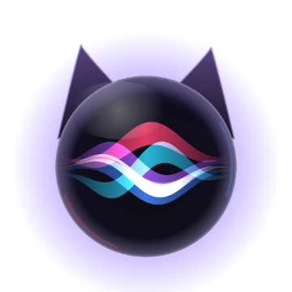
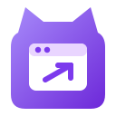
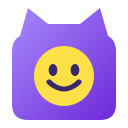
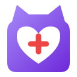
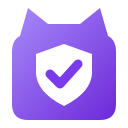
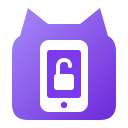

01
Kat, tu asistente
Una canica con orejas de gato. Le hablas o le escribes, te responde en voz alta y abre tus apps.
Un sistema operativo bonito, seguro y fácil, en español. Con Kat, tu asistente en forma de canica, apps propias y un escritorio que se adapta a ti: estilo Windows, Mac o Linux.

Todo en español, pensado para quien viene de Windows y no quiere complicarse.
Una canica con orejas de gato. Le hablas o le escribes, te responde en voz alta y abre tus apps.
La primera vez, a pantalla completa y con música: tu perfil, tu estilo, tu fondo y cómo desbloquear.
Miles de apps y juegos de Flathub, más las apps de Kat Studios, como KatLauncher, con un clic.
Contraseña, PIN con candado animado, tu cara (Kat Rostro) o un botón en tu teléfono (Kat Phone ID).
Pruébalo desde un USB sin instalar y, si te gusta, instálalo en minutos, con la opción de cifrar el disco.
Las apps de Kat se actualizan solas, firmadas por el proyecto: lo que no venga de Kat OS se rechaza.
Vive en la barra de tareas. Elige su diseño, su voz y su palabra de activación la primera vez.
Tus archivos, carpetas y papelera, con borrado seguro para lo que no debe recuperarse.
Pantalla, sonido, red, energía, hora, cuenta y seguridad en un solo lugar.
Parches de seguridad automáticos y las novedades de Kat OS, con historial.

Abre programas de Windows (.exe) con Wine, sin complicarte.

Casi 2000 emojis buscables por su nombre en español. Windows + punto.

Avisos de sismos y desastres cercanos (USGS y GDACS) y modos de ahorro.

Cortafuegos activado y actualizaciones de seguridad desde el primer día.

Desbloquea el PC con un botón en tu teléfono, solo en tu Wi-Fi.
Kat Rostro (desbloqueo con la cara) es una comodidad opcional: con una webcam normal, una foto podría engañarlo. Tu PIN y tu contraseña siempre funcionan.
Se cambia al instante en Kat Bienvenida o en Kat Settings. Ventanas que salen de su icono con un brillo, cursores Obsidian, modo oscuro o claro y ocho fondos propios.
Barra abajo con el menú a la izquierda. Lo de siempre.
Barra de menú arriba y dock abajo.
Barra lateral a la izquierda, con más espacio para tus ventanas.
Es la primera versión de pruebas: ya se instala y se actualiza sola, pero aún puede tener fallos.
Pruébalo sin instalar desde un USB y, si te gusta, instálalo. ISO de 2.9 GB, alojada en Internet Archive.
SHA-256c53cb2ed2fc81e932d24297247df44c53ab784a3d78b4925b39808d52aff4444
Descargar ISO · 2.9 GBVer en Internet Archive
Las apps y el sistema de Kat, firmados. Kat OS ya viene conectado y se actualiza solo; aquí puedes ver qué se publica.
Ver repositorioKat OS se basa en Debian 13 y KDE Plasma 6, y es software libre.
Tu Minecraft, a tu manera: perfiles, mods, modpacks, skins y amigos. En Kat OS se instala desde Kat Store con un clic.